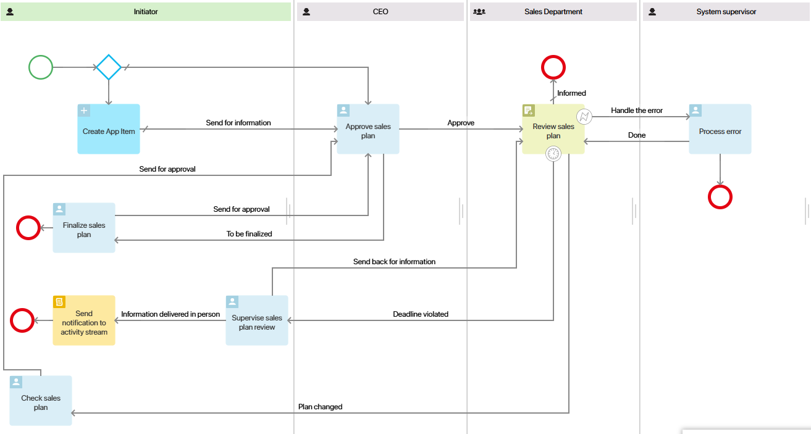
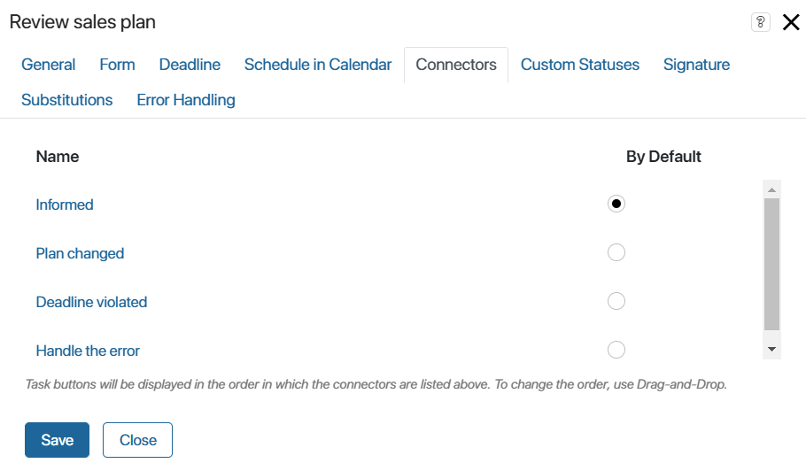
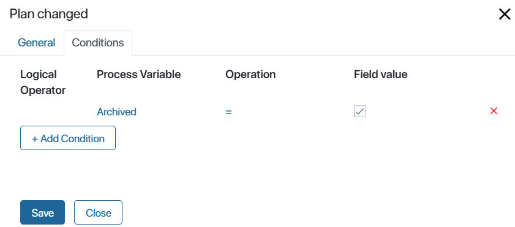
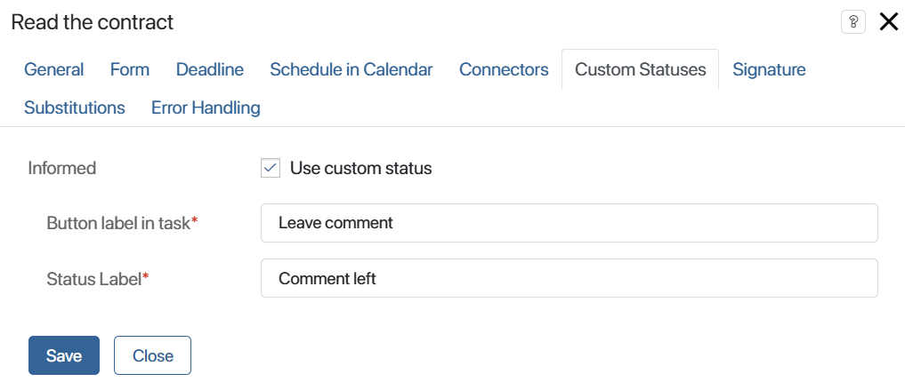
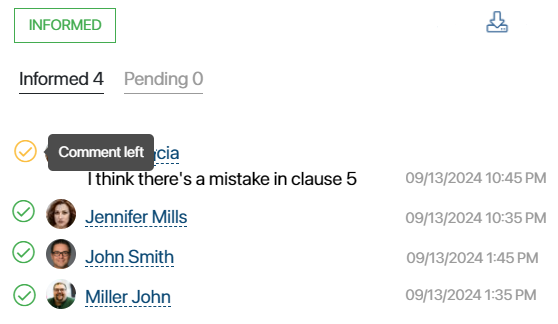

Let’s look at how to configure the process of the sales plan review.

It includes the following steps:
- The CFO, who is the initiator of the process, develops a sales plan and sends it to the CEO for approval.
- The CEO reads the plan and either approves it or sends it back for correction.
- If the plan is not approved, the CFO is tasked with finalizing the document. The plan is then sent for approval again.
- Once the plan is approved, it is sent to all sales reps for review. A list of informed users is generated, and each sales rep confirms that they have been informed about the content of the document. At the same time, the employee may leave a comment.
- If the sales plan has been changed by the time of review, the CFO should verify it. The plan is then sent back for approval and review.
- If the sales reps do not confirm that they have been informed about the plan within the set deadline, the CFO is assigned the task of monitoring the review. They can re-send the plan for review with a new deadline or deliver the information to the employees in person. In the second case, a corresponding message is added to the activity stream of the sales plan, and the list of informed users will have the Canceled status.
- Error handling is configured for the information step. If an error appears, the system supervisor is assigned with a task to handle the error and resume the process.
Configure the review activity
Let’s see how to set up a review in the described process:
- Open the settings of the Review sales plan activity and go to the Connectors tab. Outgoing connectors added for the activity are displayed here.

- Mark Informed as the default connector. Once all sales reps have reviewed the document, the process will be completed and the list of informed users will have the Informed status.
- Set up the connector that will be used if the plan sent for review is edited. To do this, click on the Plan changed connector and open the Conditions tab. Set the condition under which the connector will be activated and save the settings.

начало внимание
To use the Archived option, you must set the rules for archiving lists of informed users in the app settings.
конец внимание
- Set up the Deadline violated connector. If not all sales reps review the document within the set time, the Commercial Director will be assigned a monitoring task.
To limit the task time frame, go to the Deadline tab. Enable the Set deadline for the task option, set the time, and in the Interrupt field, select the Deadline violated connector.
- Set up the connector for error handling, so that the process takes this path if there is an error in the Send Document/App item block. In the example above, in case of such an error, a task is assigned to the system supervisor to correct the error and resume the process. Go to the Error Handling tab and enable the Interrupt option. Then select the configured Handle the error connector.
- Add the Comment left custom status so that the sales rep can draw executives’ attention to their comment when reviewing. The status will be displayed in the review task as a button. If an employee clicks it, their comment will be marked with a color in the list. This choice does not affect the process or the final status of the review.
To configure it, go to the Custom Statuses tab. Enable the use of the optional status and set the text that will be displayed on the button in the sales rep’s task and the list of informed users.

If a sales rep clicks the Leave comment button when performing a task, the corresponding text will be displayed in the list.

Once you have configured the settings, save and publish the process.